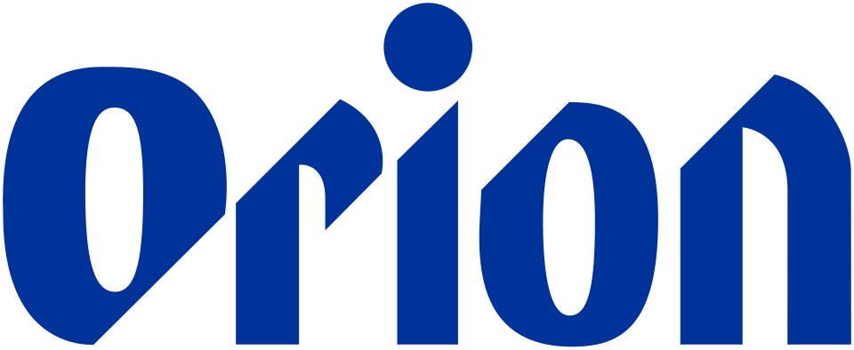

오리온 맥주 Orion Breweries
오리온 맥주(Orion Breweries)는 오키나와현 우라소에시에 본사를 둔 일본의 맥주 제조회사이다. 주요 상품인 오리온 드래프트 비어를 가리켜 오리온 맥주라고 부르기도 한다.
최종 업데이트

오리온 맥주는 어떤 브랜드인가
이 회사는 1957년에 설립된 일본의 맥주 제조회사로, 오키나와현 우라소에시에 본사를 두고 있다. 주요 맥주 상품인 오리온 드래프트 비어를 가리켜 오리온 맥주라고 칭하는 경우도 있다.
일본 맥주 대기업 5개사인 기린 맥주, 아사히 맥주, 삿포로 맥주, 산토리 맥주, 오리온 맥주 중 점유율은 0.9%로 최하위이며 일본 내 5위에 해당한다. 그러나 오키나와 지방에서는 가장 큰 점유율을 보이며, 현재에도 약 60%를 넘는 점유율을 보이고 있다.
맥주 외에 우롱차와 같은 다류 중심의 음료 생산도 함께 수행하고 있다. 대한민국 수출용 제품에는 오키나와 맥주(オキナワビール)라는 이름이 붙어 출고된다.
오리온 맥주의 브랜드 아이덴티티는 무엇인가
일본 맥주 대기업 5개사 중 점유율은 가장 낮지만, 오키나와 지방에서는 가장 큰 점유율을 보이는 오키나와현 기반의 맥주 회사이다.
오리온 맥주의 대표 제품과 서비스는 무엇인가
이 회사의 주요 맥주 상품은 오리온 드래프트 비어(オリオンドラフトビール)이며, 이 상품을 오리온 맥주라고 부르는 경우도 있다. 맥주 외에 우롱차와 같은 다류 중심의 음료 생산도 함께 수행한다.
대한민국 수출용 제품에 한하여 오키나와 맥주라는 이름을 달고 출고된다. 이는 동일한 이름의 업체에 관한 상표권 문제 및 오해가 존재하기 때문인 것으로 알려져 있다.
다만 2019년 한일 무역 분쟁과 노노재팬 등의 여파로 한국 납품 물량은 크게 하락했다.
오리온 맥주는 지금 어떤 상태인가
일본 맥주 대기업 5개사 중 점유율은 0.9%로 최하위이며 일본 내 5위에 해당한다. 오키나와 지방에서는 가장 큰 점유율을 보이며, 현재에도 약 60%를 넘는다.
전성기 때는 현 내 시장에서 80% 이상, 많게는 90%의 점유율을 보였다. 2019년 한일 무역 분쟁과 노노재팬 등의 여파로 한국 납품 물량은 크게 하락했다.
오리온 맥주 로고는 어떻게 변해왔나
자주 묻는 질문
오리온 맥주는 어느 나라 브랜드인가요?
오리온 맥주는 일본의 식음료 브랜드입니다.
오리온 맥주는 언제 설립되었나요?
오리온 맥주는 1957년 설립되었습니다.
오리온 맥주의 브랜드 아이덴티티는 무엇인가요?
일본 맥주 대기업 5개사 중 점유율은 가장 낮지만, 오키나와 지방에서는 가장 큰 점유율을 보이는 오키나와현 기반의 맥주 회사이다.
오리온 맥주의 대표 제품은 무엇인가요?
이 회사의 주요 맥주 상품은 오리온 드래프트 비어(オリオンドラフトビール)이며, 이 상품을 오리온 맥주라고 부르는 경우도 있다.
오리온 맥주는 현재 어떤 상태인가요?
일본 맥주 대기업 5개사 중 점유율은 0.9%로 최하위이며 일본 내 5위에 해당한다.
오리온 맥주의 본사는 어디에 있나요?
오리온 맥주의 본사는 Toyosaki에 있습니다(위키데이터 기준).
오리온 맥주의 공식 웹사이트는 어디인가요?
오리온 맥주의 공식 웹사이트는 http://www.orionbeer.co.jp/ 입니다.
출처와 검증
오리온 맥주 관련 참고: 공식 웹사이트 · 위키데이터 Q7102771 · 한국어 위키백과 · 영어 위키백과. 브랜드명은 한글과 원어를 함께 표기하되 데이터에 없는 표기는 만들지 않습니다. 기원 국가·설립연도는 검수된 정의문에서 확인된 값을 우선하고, 없을 때만 공식 웹사이트 URL이 일치하는 위키데이터 개체의 값을 씁니다. 위키데이터 값은 2026-11-08 기준입니다.